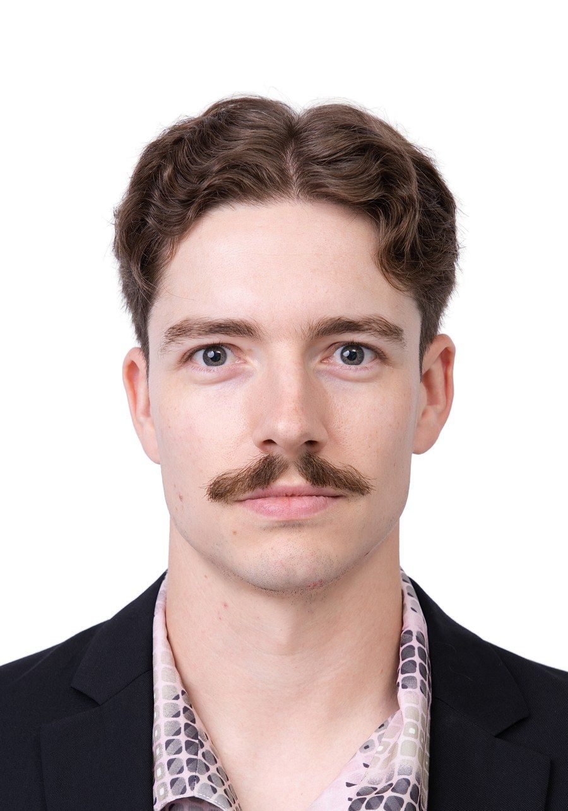

尺寸、背景、头部位置、头饰与眼镜——拍之前先搞清楚规格，一次通过。Size, background, head position, headwear and glasses — know the rules before you shoot so it's approved first time.

以下规格来自马来西亚移民局 ESD 网站的“护照照片要求”页面（查看原文）。不同申请类别可能有不同要求，请以你所申请的机构为准。The specification below comes from the Malaysian Immigration Department's ESD "Passport Photo Requirements" page (view source). Requirements can differ by application type — always confirm with the issuing authority.
官方页面明确要求照片必须清晰锐利，不可模糊、歪斜、拍得太远或人物太小，也不可加边框。自己用手机拍或在家打印，最容易在这几点出问题。The official page requires a clear, sharp image — not blurred, tilted, taken too far away or too small — and no border. Phone shots and home prints most often fail on exactly these points.
以上为限时优惠价格，实际价格请以预约时门店最新公告为准。预约或到店时告诉我们你的用途（马来西亚护照、哪个国家的签证），我们会确认规格后再拍摄。吉隆坡店位于 Old Klang Road，营业时间 10:00 AM – 7:00 PM，逢星期四休息；新山店位于 Mount Austin。Limited-time pricing — please confirm current pricing when booking. Tell us your purpose (Malaysian passport, or which country's visa) and we will confirm the specification before shooting. The KL studio is in Old Klang Road, open 10:00 AM – 7:00 PM and closed on Thursdays; the JB studio is in Mount Austin.
戴眼镜的话，镜片不能有反光或色调，容易反光的话建议自备备用眼镜。需要签证照片时，请先告诉我们目的地国家，因为各国规格可能不同。建议先用 WhatsApp 预约以确保有拍摄时段，也欢迎现场排队。If you wear glasses, lenses can't be tinted or glare-prone — bring a spare pair if yours reflect. For visa photos, tell us the destination country first because specifications differ. Booking via WhatsApp is recommended; walk-ins are also welcome.
立即预约你的拍摄，当天取件。Book your session today with same-day collection.